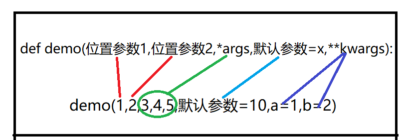

原文连接:https://www.cnblogs.com/zrh918/p/11720126.html
目录：
1 a = 1
2 b = 2
3 if a < b :
4 c = b
5 else:
6 c = a这样写代码非常繁琐，所以在遇到if else非常简单的时候，可以用到三元运算
a = 1
b = 2
c = b if a < b else a①---⑥表示写三元运算时候的流程
二.函数：
函数是组织好的，可重复使用的，用来实现单一，或相关联功能的代码段。
函数能提高应用的模块性，和代码的重复利用率。你已经知道Python提供了许多内建函数，比如print()。
但你也可以自己创建函数，这被叫做用户自定义函数。
函数代码块以 def 关键词开头，后接函数标识符名称和圆括号 ()。
任何传入参数和自变量必须放在圆括号中间，圆括号之间可以用于定义参数。
函数的第一行语句可以选择性地使用文档字符串—用于存放函数说明。
函数内容以冒号起始，并且缩进。
return [表达式] 结束函数，选择性地返回一个值给调用方。不带表达式的return相当于返回 None
函数定义示例：
1 def 函数名(参数1,参数2):
2 '''
3 这是一个解决什么问题的函数
4 :param 参数1: 参数1代表输入什么
5 :param 参数2: 参数2代表输入什么
6 :return: 返回什么东西
7 '''
8 函数体
9 返回值
10 return 返回值例如定义计算字符串长度的函数：
1 def my_len(my_str): #定义函数
2 '''
3 用于计算可变类型长度的函数
4 :param my_str: 用户输入的参数内容
5 :return:返回参数的长度
6 '''
7 count = 0
8 for val in my_str:
9 count += 1
10 return count
11 a = my_len("hightgood")
12 print(a) #输出值9定义一个函数后，尽量不要用print,尽量return结果
自己是可以知道函数代码内部打印的是啥，自己可以随时修改，但是别人不知道
函数中的return：
1.返回None
有三种情况：
（1）无return的情况
（2）本来就return None
（3）return #return空白
#无return
def my_print(parameter):
print("Welcome",parameter)
#return None
def my_print(parameter):
return None
#return
def my_print(parameter):
return #一般用于结束函数体2.返回一个值
1 def my_len(my_str): #定义函数
2 #计算可变类型值的长度
3 my_str = "goodnight"
4 count = 0
5 for val in my_str:
6 count += 1
7 return count #count就是那个返回值3.返回多个值
1 def my_print():
2 return 11,22,33,[1,2,3]
3 a = my_print()
4 print(a)
5 #打印结果：(11, 22, 33, [1, 2, 3])return后面的值用逗号隔开，然后以元组的形式返回
4.结束函数代码
1 def my_print():
2 print('one')
3 return #遇到return不继续函数下面的代码
4 print('two')
5 my_print() #结果：one5.补充：接收多个值
1 def my_print():
2 return 1,2,3
3 a,b,c=my_print()
4 print(a,b,c) #相当于用a接收1，b接收2，c接收3
5 def my_print():
6 return [4,5,6]
7 a,b,c=my_print()
8 print(a,b,c) #一个列表里有三个值，分别用abc去接收，相当于解包
1 def my_len(my_str): #这里的my_str就是形参，形式参数，输入对象不确定，形参可以有多个，用逗号隔开
2 my_str = "goodnight"
3 count = 0
4 for val in my_str:
5 count += 1
6 return count
7 a = my_len("hightgood") #这里的hightgood就是实参，实际参数，输入对象确定
8 print(a)函数参数详解：
1.位置参数：
1 def demo_1(a,b): #位置参数 用户必须传入的参数，不传会报错
2 print(a,b)
3 demo_1(1,2) #输出结果：1 2 按照位置传参
4 demo_1(b=1,a=2) #输出结果：2 1 按照关键字传参
5 demo_1(1,b=2) #输出结果：1 2 混用，但必须注意先按照位置传参，再按照关键字传参，不然会报错2.默认参数：
1 def welcome(name,sex='man'): #sex为默认参数
2 print('welcome %s,sex %s'%(name,sex))
3 welcome('zrh') #输出结果：welcome zrh,sex man
4 welcome('lml','women') #输出结果：welcome lml,sex women
5 #默认参数如果不传参数，就用默认值，如果默认参数传入参数，就用传入值默认参数的陷阱：
（1）
1 a = 18
2 def age(a1,a2=a):
3 print(a1,a2)
4 a = 20
5 age(10) #输出结果：10 18内部原理：
（2）
专门针对可变数据类型
1 def demo(a = []):
2 a.append(1)
3 print(a)
4 demo() #输出结果：[1]
5 demo() #输出结果：[1] [1]
6 demo() #输出结果：[1] [1] [1]
7 def demo_1(a = []):
8 a.append(1)
9 print(a)
10 demo_1([]) #输出结果：[1]
11 demo_1([]) #输出结果：[1]
12 demo_1([]) #输出结果：[1]因为可变类型改变不是在内存中开辟一个新空间，而是在原来的基础上做修改，而10--12行是开辟了三块新内存
3.动态参数：
定义动态参数
1 def demo(*agrs): #按位置输入的动态参数，组成一个元组
2 pass
3 def demo_1(**kwargs): #按关键字传入的参数，组成一个字典
4 pass站在函数定义的角度：*做聚合作用，将一个一个的参数组合成一个元组（**则是字典）
站在函数调用的角度：*做打散用，将一个列表或元组打散成多个参数（**则是关键字形式）
1 #函数定义角度：
2 def demo(*agrs): #按位置输入的动态参数
3 print(agrs)
4 demo(1,2,3,4,5) #输出结果(1, 2, 3, 4, 5)
5 def demo_1(**kwargs): #按关键字传入的参数，组成一个字典
6 print(kwargs)
7 demo_1(a=1,b=2,c=3) #输出结果{'a': 1, 'b': 2, 'c': 3}
8 #函数调用角度：
9 val = [1,2,3,4]
10 val2 = {'a':1,'b':2}
11 demo(*val) #将val打散成 1 2 3 4，然后传入函数
12 demo_1(**val2) #将val2打散成 a=1 b=2，然后传入函数解释一下为什么在混用的传参中有必须先按位置传参，再按关键数传参：
1 def demo(*agrs,**kwargs): #*agrs和**kwargs的位置是python固定死的
2 #所以必须先是按照位置传参的*agrs，再是按照关键字传参的**keagrs
3 print(agrs)
4 print(kwargs)
5 demo(1,2,3,4,a = 1,b = 2)
6 # 输出结果：
7 # (1, 2, 3, 4)
8 # {'a': 1, 'b': 2}第3行对应第7行的输出结果
第4行对应第8行的输出结果
定义多个不同类型参数时的顺序：
1 def demo(位置参数1,位置参数2,*args,默认参数=x,**kwargs):
2 pass
3 #以后职业生涯用到多种参数时必须这么写格式及原理：

情况总结：
1 def demo(*args,**kwargs): #接收参数个数不确定的时候用动态传参，用到的时候再用
2 pass
3 def demo_1(a,b,c): #位置参数，几个参数必须都要传入几个值，最常用
4 pass
5 def demo_2(a,b=10): #默认参数，当参数信息大量形同时用到
6 pass函数案例：
需求：写函数，用户输入操作文件名字，将要修改的内容，修改后的内容，然后进行批量操作
1 def dict_change(filename,old_content,new_content):
2 '''
3 函数用于文件内容批量修改操作
4 :param filename: 操作对象的名字
5 :param old_content: 将要修改的值
6 :param new_content: 修改后的值
7 :return:无返回值
8 '''
9 import os
10 with open(filename,encoding='utf-8') as file_old,open('new_file','w',encoding='utf-8') as file_new :
11 for val_old in file_old:
12 val_new = val_old.replace(old_content,new_content)
13 file_new.write(val_new)
14 os.remove(filename)
15 os.rename('new_file',filename)
16 dict_change('file','.','=')修改后的文件：
1 #函数的嵌套调用
2 def demo_1():
3 print(123)
4 def demo_2():
5 demo_1()
6 print(456)
7 demo_2()
8 # 输出结果：
9 # 123
10 # 456
11
12 #函数嵌套定义
13 def demo_1():
14 print(123)
15 def demo_2():
16 print(456)
17 demo_2()
18 demo_1()
19 # 输出结果：
20 # 123
21 # 456注意：内存读函数的时候先读定义函数名（不读里面的函数体），后面遇到调用此函数的时候，再返回读函数的函数体。
在函数外调整内部嵌套函数内容的方法：
1 def case(x,y,z):
2 def new_case(a,b,c):
3 print('content',a,b,c)
4 new_case(x,y,z)
5 case(1,2,3)
6 #输出结果 content 1 2 3进阶：
①到⑦表示代码运行顺序
*args 和 **kwargs 只是函数定义参数的方式，和混合传参不是一回事哦
在函数外部定义的变量为全局变量，函数内部定义的变量为局部变量
在函数内定义的局部变量只在该函数内可见，当函数运行结束后，在其内部定义的所有局部变量将自动删除而不访问
1.
1 a = 1
2 b = 2
3 def num_max(a,b):
4 c = b if a<b else a
5 print(c)
6 def num_min(a,b):
7 c = a if a<b else b
8 print(c)
9 num_max(10,8)
10 num_min(5,6) 
局部命名空间之间信息不互通，不共享
2.
1 a = 1
2 b = 2
3 def num_max():
4 c = b if a<b else a
5 print(c)
6 num_max() #输出结果：2函数局部命名空间（儿子）可以用全局命名空间（爸爸）的内容，但是全局命名空间（爸爸）不可以使用函数局部命名空间（儿子）的内容
就是 儿子可以用爸爸的，爸爸不能用儿子的
3.
1 a = 1
2 b = 2
3 def num_max():
4 def num():
5 a = 3
6 print(a)
7 num()
8 num_max() #输出结果：3 对于局部命名空间来说，自己有的话就用自己的，自己没有再用全局命名空间的
4.
1 a = 1
2 b = 2
3 def num_max():
4 c = 3
5 def num():
6 d = 4
7 print(a)
8 num()
9 num_max() #输出结果：1儿子没有的先用爸爸的，爸爸也没有的话，再用爷爷的
爷爷不能用爸爸，更不能用儿子
爸爸也不能用儿子的
命名空间的加载顺序：
1.启动python
2.内置的命名空间（在哪里都可以用，比如print()等）
3.加载全局命名空间中的名字 —— 从上到下顺序加载
4.加载局部命名空间中的名字 —— 调用该函数的时候，在函数里从上到下去加载
函数的作用域：
内置的命名空间，在任意地方都可以用
全局的命名空间，在我们写的代码里任意地方（相当于爷爷，爸爸儿子都可以用爷爷的）
局部的命名空间，只能在自己的函数内使用
global：在函数内部修改全局变量的值
1 a = 1
2 def demo_1():
3 a =2
4 print(a)
5 def demo_2():
6 a = 3
7 print(a)
8 demo_2()
9 demo_1()
10 print(a)打印结果：
需求，在函数里修改全局变量a = 10，这个时候就用的global：
1 a = 1
2 def demo_1():
3 global a
4 a =10
5 print(a)
6 def demo_2():
7 a = 3
8 print(a)
9 demo_2()
10 demo_1()
11 print(a)打印结果：
nonlocal：在函数内部修改函数上一级的变量值，儿子修改爸爸的值，但不影响爷爷的值，只改一层
nonlocal 只修改局部命名空间里的 从内部往外部找到第一个对应的变量名
1 a = 1
2 def demo_1():
3 a =2
4 print(a)
5 def demo_2():
6 a = 3
7 print(a)
8 demo_2()
9 demo_1()
10 print(a)打印结果：
需求：修改demo_1()里a的值为10
1 a = 1
2 def demo_1():
3 a = 2
4 print(a)
5 def demo_2():
6 nonlocal a
7 a = 10
8 print(a)
9 demo_2()
10 demo_1()
11 print(a)输出结果：
def func():
passfunc就是函数名，加个括号func()才是调用函数
函数的名字首先是一个函数的内存地址，可以当作变量使用 ，函数名是第一类对象的概念
函数的名字可以赋值，可以作为其他列表等容器类型的元素
函数的名字可以作为函数的参数,返回值
1 def func():
2 print(123)
3 print(func)
4 #输出结果：<function func at 0x0000023DB22EF1F8>
5 # 是个函数 名为func 内存地址就表示func是一个存着一个函数地址的变量而已
所以下面这些都可以使用：
1 def func():
2 print(123)
3 a = func
4 print(func)
5 print(a)
6 #输出结果：一模一样
7 # <function func at 0x000002435074F1F8>
8 # <function func at 0x000002435074F1F8>1 def func():
2 print(123)
3 a = func
4 a() #输出结果：1231 def func():
2 print(123)
3 list_1 = [func]
4 print(list_1) #输出结果 [<function func at 0x000001BC83DCF1F8>]
5 #这个时候 list_1[0] == func
6 list_1[0]() #输出结果：123 list_1[0]()也可以调用函数func() 1 def func():
2 print(123)
3 def exal(q):
4 q() #相当于func()，用到了前面说的嵌套函数的调用
5 print(q,type(q))
6 exal(func)
7 print(type(func))
8 #输出结果：
9 # 123
10 # <function func at 0x0000027B24E5F288> <class 'function'>
11 #<class 'function'>高阶函数：
高阶函数定义:
1.函数接收的参数是一个函数名
2.函数的返回值是一个函数名
满足上述条件任意一个,都可称之为高阶函数
1 def foo():
2 print('from foo')
3 def test(func_name):
4 return func_name
5 print(test(foo)) #<function foo at 0x0000018F2211F288> 拿到的是foo函数名的内存地址此时test()就是一个高阶函数
内部函数(下面的demo_2)引用了外部函数(dem_1)的 变量，内部的函数就叫做闭包
1 def demo_1():
2 name = 'zrh'
3 age = '20'
4 def demo_2():
5 print(name,age)
6 print(demo_2.__closure__)
7 #(<cell at 0x0000018B6DE9A108: str object at 0x0000018B6DE6DDF0>,
<cell at 0x0000018B6DE9A1F8: str object at 0x0000018B6DE6DDB0>)
8 #打印出来有东西说明用到了外部函数的变量，就形成了闭包
9 demo_1()闭包的作用：
在变量不容易被别人改变的情况下，还不会随着你多次去调用而反复取创建
1 def demo_1():
2 name = 'zrh'
3 print(name)
4 demo_1()
5 demo_1()
6 demo_1()
7 demo_1()
8 demo_1()
9 demo_1()
10 #......如果我执行demo_1函数一万次。那么内存就会开辟一万次空间储存 name = ‘zrh’，然后再耗费时间关闭那一万次的空间
1 def demo_1():
2 name = 'zrh'
3 def demo_2():
4 print(name)
5 return demo_2
6 i = demo_1()
7 i()
8 i()
9 i()
10 i()如果用闭包的方式，即使调用函数一万次，内存也会在第6行代码执行时创建一次空间来储存name = ‘zrh’，大大节省空间利用效率
闭包的应用：
1 from urllib.request import urlopen #模块
2 def get_url():
3 url = 'http://www.cnblogs.com/'
4 def inner():
5 ret = urlopen(url).read()
6 return ret
7 return inner
8 get_web = get_url()
9 res = get_web()
10 print(res)同样url = 'http://www.cnblogs.com/'只创建了一次，后面调用千百万次，内存空间只有一次